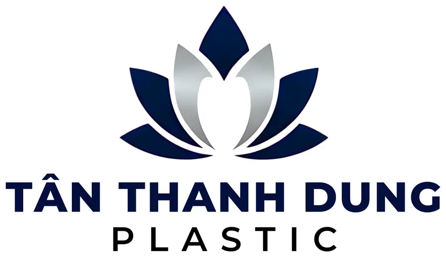
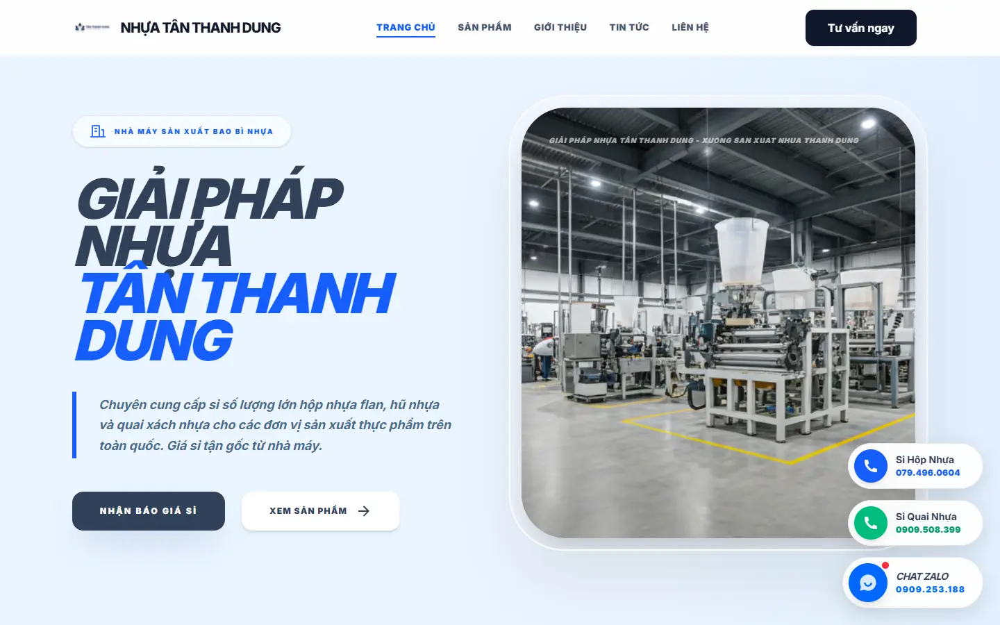
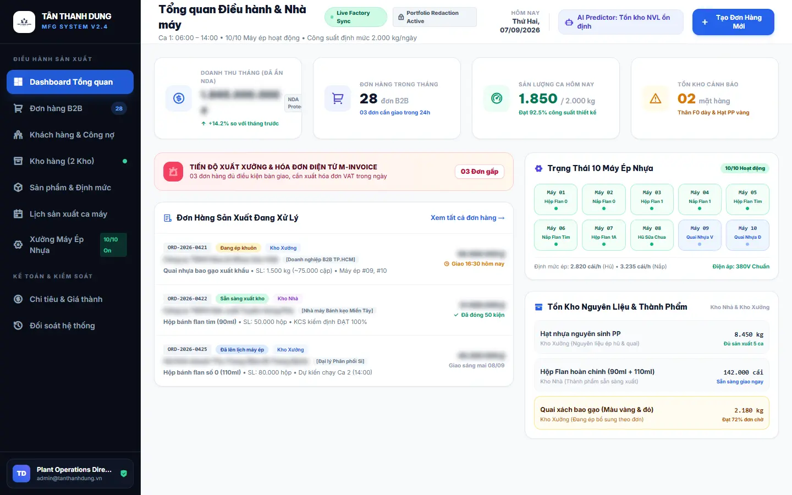
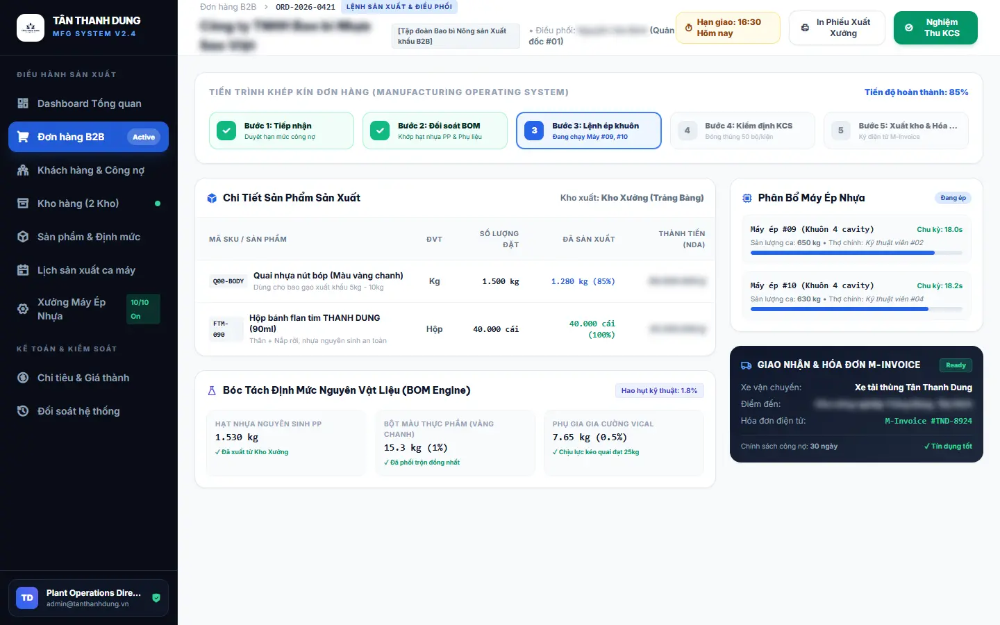

01—03
Control & Commercial
Dashboard & AI analytics, B2B order management, and customer CRM with debt-limit and 30-day overdue alerts.
One production system connecting B2B orders, debt control, two warehouses, material BOMs, machine scheduling, quality control, dispatch, and electronic invoicing.

Digital operations for real plastic manufacturing.
gndme built TÂN THANH DUNG's public website and PlasticApp, a nine-module manufacturing operating system connecting B2B orders, two warehouses, BOM material planning, ten injection-molding machines, KCS, costing, debt control, and electronic invoicing. The workflow replaced fragmented paper tracking and reduced routine order-progress checks from 15–20 minutes to under three minutes.

TÂN THANH DUNG needed more than a corporate storefront. Its daily operation crossed sales calls, Zalo messages, handwritten factory notes, warehouse records, production schedules, and accounting reconciliation—with no single source of operational truth.
gndme designed the public website and PlasticApp Manufacturing OS as one connected ecosystem: customer acquisition on the outside, controlled production execution on the inside.
The dashboard consolidates B2B demand, monthly orders, shift output, inventory alerts, active production orders, all 10 injection-molding machines, and stock across the house and factory warehouses. Management sees live operating status without reconstructing it from calls or paper.


Dashboard & AI analytics, B2B order management, and customer CRM with debt-limit and 30-day overdue alerts.
Dual-location warehouse control, technical product and BOM definitions, and shift-level production scheduling.
Monitoring for 10 injection-molding machines, worker and KCS management, cost accounting, and M-Invoice reconciliation.
Strict RBAC maps each job to the data and actions it actually needs. Management gets plant-wide visibility while transactional work remains controlled at the operational edge.
Automated BOM deductions keep PP resin and packaging stock aligned with standard mold consumption. Credit controls warn—and can block new orders—when a customer exceeds its limit or passes 30 days overdue.
Internal factory piloting began in late January 2026. The public website and full PlasticApp platform went live on a Cloud VPS in April 2026.